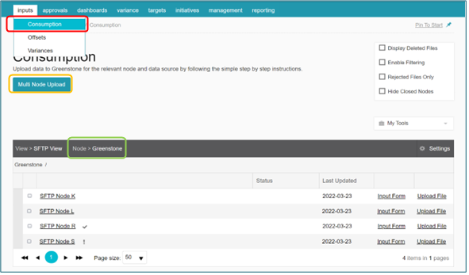
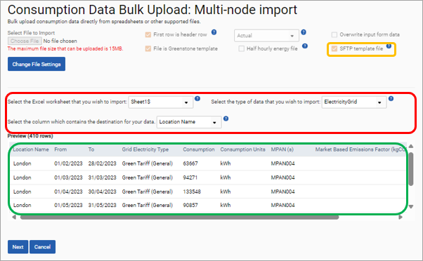

SFTP is a process by which files can be uploaded without the need to log in. To do this, some setup is involved. See the Secure File transfer protocol (SFTP) setup section for details on how to setup SFTP. This section outlines the use of SFTP within the environment module.
Template Upload
To initialise the SFTP service in environment, a template file needs to be uploaded, which will ‘map’ your data and allows Cority to ‘remember’ which columns of your data files contain which data. Therefore, the layout of the columns must remain exactly the same as the template file provided and if these are edited in any way then the data upload will fail.
To set up a SFTP template in the Environment module in Cority select ‘Inputs’ and then ‘Consumption’ (red outline) from the top menu bar.
This will take you to a table displaying the nodes within your selected view. To change this display you can choose a different view within the ‘Change Settings’ section. It is recommended that all SFTP templates are uploaded using ‘Multi Node Upload’ (orange outline) and with the top-level node selected (green outline) as then the addition of new nodes and data sources will always be included in the upload process.

Clicking the ‘Multi Node Upload’ button (orange outline above) will display the following screen. The tick boxes next to ‘First row is header row’ and ‘File is Cority Template’ will be checked when this screen is accessed. If the ‘File is Cority Template’ tick box remains selected then the mapping step where the fields in the spreadsheet are mapped to those in Cority is skipped and as this tick box is preselected, if the spreadsheet you are uploading is not a Cority template then it is recommended that this tick box should be unchecked.
Please tick the ‘SFTP template file’ (orange outline) and select the template file before continuing. This will upload your file and display it in the table below (green outline).

Please select the correct spreadsheet tab, data source type and the destination column as shown in the red outline above.
When you are satisfied that this is the data that you wish to upload, please click ‘Next’ and the file will be placed in the queue. Once this file has been imported it will be designated as a ‘SFTP Template’ file in the system. Please do not delete this template as then SPM will not know the mapping required when files are transferred using SFTP and these files will not upload.
Uploading files to environment
An integral part of this automatic process is the naming convention of the files as well as the format of the files themselves. To transfer files using SFTP, files have to be named using the following convention as the first part of the file name, i.e. before the underscore, ensures that subsequent files will be uploaded to the correct data source and nodes.
EmissionSource_XXXXX
Example file names:
Electricity_London-March 2022
AirBusiness_UK-Q1-2022
The section after the underscore can change according to user preference, although it is recommended that this information provides details of the location / datasource and time period that the data is for. This allows users to easily identify the location / datasource that the data is applicable for and when it is applicable for, which in the event of an error will speed up the process for correction.
The name or position of this worksheet tab cannot be altered as the data upload will fail. If there are many sheets within a workbook then the same worksheet will be uploaded that has been mapped as part of the mapping process.
To upload these files please drop the upload file in the relevant folder as shown in the Secure File transfer protocol (SFTP) setup section.